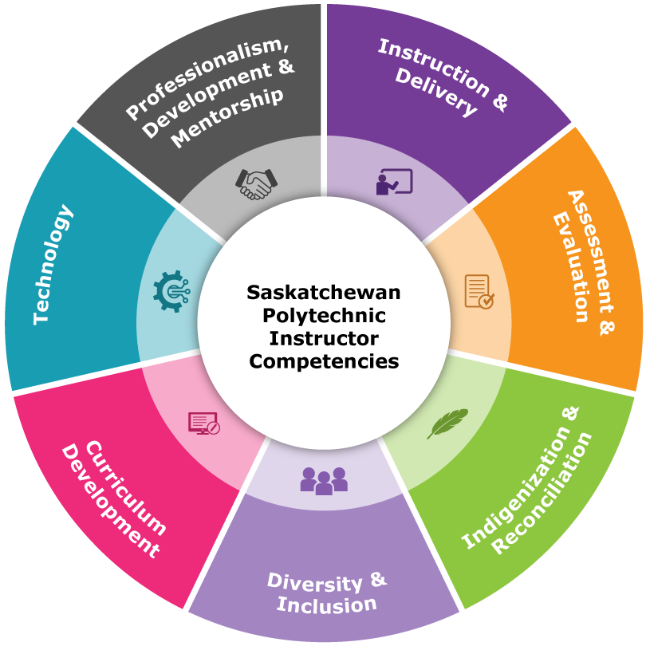

About
I'm an educator and software developer focused on front-end development, mobile applications, and UI/UX design. I've helped launch dozens of websites, ship hundreds of apps/games, and taught students about technology, computer science, programming, and design. My teaching philosophy is rooted in Universal Design for Learning, Work Integrated Learning, and demystifying technology.
Profiles
Instructor Competencies
The Instructor Competencies articulate the knowledge, skills, and attitudes necessary to be a successful instructor at Saskatchewan Polytechnic, and provide a framework for continuous professional development.
As part of Learners, Instruction & Fundamentals of Teaching (LIFT) program, LIFT-1008 Instructional ePortfolio course, faculty are tasked with collecting artifacts and accompanying reflections that align with each instructor competency.
Click on the instructor competencies below to view my artifacts and reflections as of February 5, 2026.